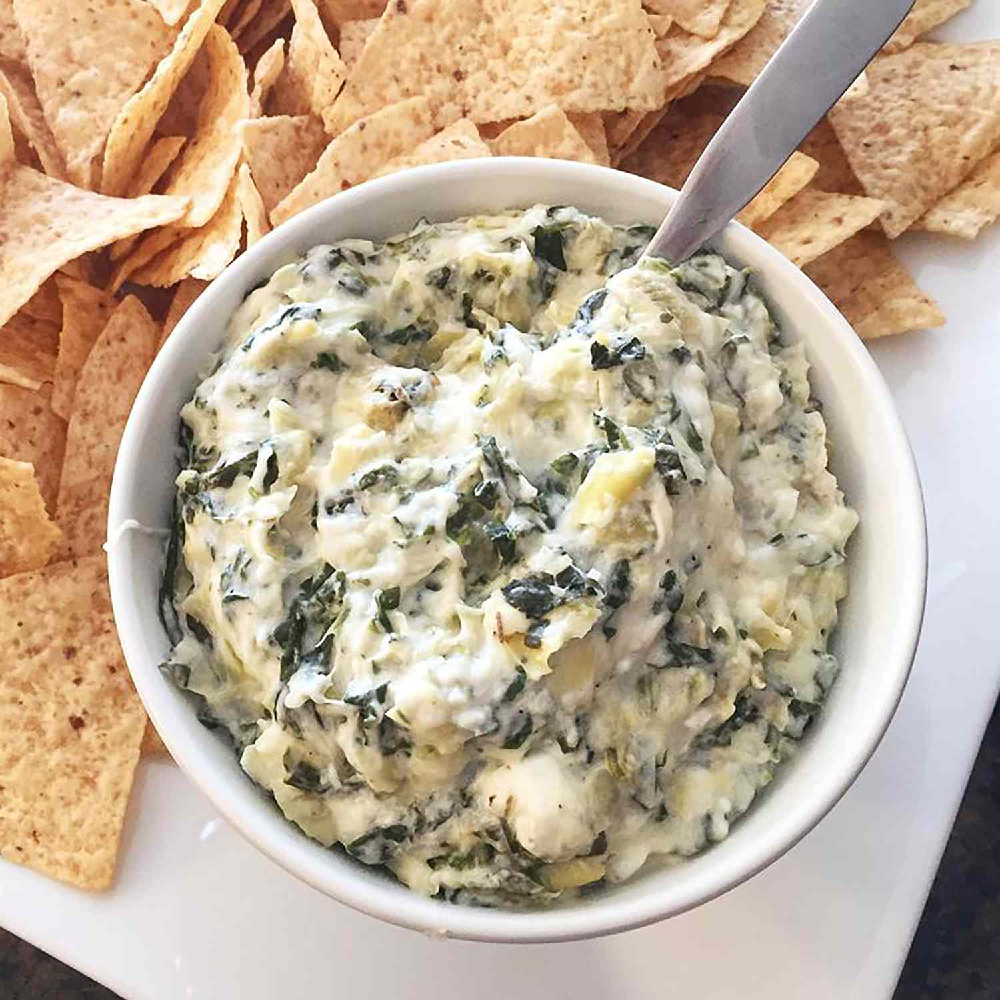

Hot Spinach Artichoke Dip

Description
This spinach artichoke dip is delicious. It's so cheesy and fragrant. If you don't like artichokes,
don't worry — you'll never know they're in there! My only question is: Is it okay to eat it with a
spoon right out of the dish?
Spinach artichoke dip is the best (and most delicious) way to get any party started. This crowd-pleasing
spinach artichoke dip recipe is sure to be a hit with your friends and family.
Hot Spinach Artichoke Dip Ingredients
These are the ingredients you'll need to make this top-rated spinach artichoke dip:
- Cream cheese: This satisfying spinach artichoke dip starts with a block of cream cheese.
- Mayonnaise: Mayonnaise lends creaminess and a welcome tangy flavor.
- Cheeses: You'll need grated Parmesan, grated Romano, and shredded mozzarella.
- Garlic: A clove of minced garlic takes the flavor up a notch.
- Spices and seasonings: The spinach artichoke dip is seasoned with dried basil, garlic salt, salt, and pepper.
- Artichoke hearts: Drain and chop one can of artichoke hearts.
- Spinach: Thawed and drained frozen spinach is perfect for this easy recipe.
How to Make Spinach Artichoke Dip
You'll find the full, step-by-step recipe below — but here's a brief overview of what you can expect when you make this crowd-pleasing spinach artichoke dip:
- Mix all the ingredients (except for the mozzarella) together.
- Transfer the mixture to a prepared baking dish. Top with cheese.
- Bake the spinach artichoke dip in the preheated oven until bubbly.
Nicole's Best Spinach Artichoke Dip Tips
All the best dips start with cream cheese, according to culinary producer Nicole McLaughlin (a.k.a. NicoleMcMom). This spinach artichoke dip is proof! Here are
a few of Nicole's tips and tricks for making the best spinach artichoke dip of your life:
- It's important that your cream cheese is softened before you start mixing the ingredients. Otherwise, it won't incorporate well.
- Mix everything together before you add the spinach and artichokes. You'll want to get the cream cheese mixture well-blended first so the veggies stay intact.
- Squeeze out as much moisture as you can before you add the spinach so the dip doesn't get runny.
- If you want to make spinach artichoke dip in advance, mix all the ingredients together — but don't bake it. Store it in the fridge for a day or two, then bake it right before serving.
What to Serve With Spinach Artichoke Dip
Serve this spinach artichoke dip hot with tortilla chips, crackers, pita bread, or vegetables. If you want to go the extra mile, try making homemade bagel chips or homemade crostini.
How to Store Spinach Artichoke Dip
Allow the spinach artichoke dip to cool to room temperature, then transfer it to an airtight container. Store in the refrigerator for up to three days. Reheat in the oven.
Can You Freeze Spinach Artichoke Dip?
You can freeze spinach artichoke dip for up to three months. However, we don't recommend it — the creamy ingredients will separate and become watery during the freezing and thawing process.
Ingredients
- 1 (8 ounce) package cream cheese, softened
- ¼ cup mayonnaise
- ¼ cup grated Parmesan cheese
- ¼ cup grated Romano cheese
- 1 clove garlic, peeled and minced
- ½ teaspoon dried basil
- ¼ teaspoon garlic salt
- salt and pepper to taste
- 1 (14 ounce) can artichoke hearts, drained and chopped
- ½ cup frozen chopped spinach, thawed and drained
- ¼ cup shredded mozzarella cheese
Producer
Step 1
Preheat the oven to 350 degrees F (175 degrees C). Lightly grease a small baking dish.
Step 2
Mix cream cheese, mayonnaise, Parmesan cheese, Romano cheese, garlic, basil, garlic salt, salt, and pepper together in a medium bowl. Gently stir in artichoke hearts and spinach.
Step 3
Transfer the mixture to the prepared baking dish; top with mozzarella cheese. Bake in the preheated oven until bubbly and lightly browned, about 25 minutes.